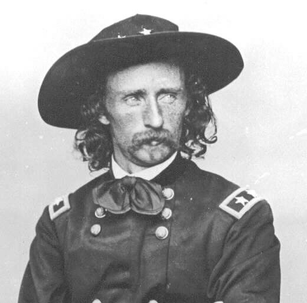
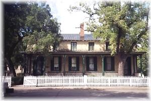
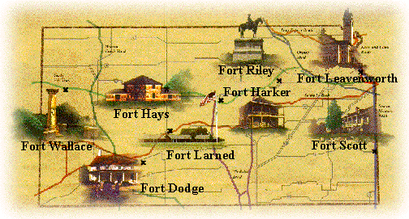

|
|
| You may be surprised to learn that Ft.
Riley and Ft. Larned were two of the most important forts in the middle 1800’s.
They were both used to protect wagon trains and merchants along the Santa
Fe and Oregon Trails. Both forts had an escorting system to help wagon
trains move safely along the Trails. Wagons could not pass either fort
without an escort. |
| Ft. Riley was established in 1852 in honor
of Colonel Bennett C. Riley, a Mexican War hero. Ft. Riley was first
named “Camp Center”, because of it being in the center of the United States.
Captain Charles S. Lowell gave the fort its name on May 17, 1853. |
| In 1866, Ft. Riley became the site of
the formation of the 7th cavalry. Lieutenant Colonel George Custer took
command of the 7th cavalry. From Ft. Riley, the cavalry rode to famous
battles such as Beecher’s Island, Washita River, and the Battle of Little
Bighorn. Ft. Riley stood as the major horse cavalry training school
and was boasted one of the best in the World. Some of the frontier forts closed, due to the lessening conflicts with the Indians. Ft. Riley escaped this fate when Lieutenant General Philip Sheridan recommended to Congress to make Ft. Riley “Cavalry Headquarters of the Army.” Shortly after its formation, the 9th cavalry, also known as the buffalo soldiers, passed through Ft. Riley in route to permanent stations in the southwest. They returned during the early 1880’s. |
 |
| Ft. Riley has many well-preserved buildings
and monuments. One of them is the famous Custer House. It was
constructed of native limestone in 1865. It is the only surviving set
of quarters from Ft. Riley’s earliest history. It depicts military life
on the plains during the Plains Indians War. It is unchanged from its
original design and furnished with furniture from 1880 to 1890. It
is believed that Mr. And Mrs. Custer occupied either this or the sister-set
of quarters while stationed there in 1866. |
 This is Lieutenant
Colonel George Custer’s house. It has been around for over 100 years. It
stands in front of the parade area in Ft. Riley. |
| At one time, Ft. Riley was the home of
the U.S. Army’s First Infantry Division and had been for almost a century.
Ft. Riley soldiers have been in many wars such as WWI, WWII, the Korean War,
and the Vietnam War. A couple others were the Gulf War and Operation
Desert Storm. During Desert Storm, the First Infantry Division returned
to Ft. Riley. Today, Ft. Riley is called the “Home of America’s Army.” |
| Ft. Larned was established on Oct. 22,
1859, as a base of military operations against the Plains Indians. Fort
Larned was named in honor of colonel Benjamin F. Larned, U.S. Paymaster General.
Ft. Larned is located near Pawnee Fork. The post was originally named
“Camp on Pawnee Fork,” then later, it was named “Camp Alert,” because troops
had to be constantly alert for Indians. The fort was eventually named
Fort Larned. |
| Troops escorted mail coaches, protected
wagon trains along the Santa Fe Trail, and patrolled the region. Fort
Larned also served as a base for military campaigns. Fort Larned also used as an agency for the Administration of the Central Plains Indians by the Bureau of Indian Affairs under the terms of the Fort Wise Treaty in 1861. Two other treaties that were important to Ft. Larned were the Treaty of the Little Arkansas in 1865, and the Medicine Lodge Treaty in 1867. Throughout the 1860’s, the fort served as an agency of the Indian Bureau, as the government attempted to find a peaceful solution to the conflicts. |
| Plains Indians took advantage of the opportunity
to strike, while the Civil War sent many troops to the east. Indian
raids and harassment of travelers along the Santa Fe Trail increased, forcing
travelers to seek protection in Ft. Larned. On July 17, 1864, Kiowa
Indians raided Ft. Larned and stole 172 horses and mules from the corral.
They were pursued, but never caught. In 1871, people traveling along
the Santa Fe Trail needed some help continuing with their journey. Indians
were raiding wagon trains and stealing horses, so an escorting system was
established. All wagon trains and merchants were not allowed to travel
westward beyond Ft. Larned without an escort. |
| The soldiers first created an adobe fort.
It consisted of an officer’s quarters, two combination storehouses and barracks,
a guardhouse, two laundresses’ quarters, and a hospital. Later additions
included a bakery, meat house, and shopping buildings. The sod and
adobe structures were replaced with sandstone from 1866 to 1868. |
| On November 27, 1868, most of the Indians
in the Ft. Larned area were moved onto reservations. This happened because
of Custer’s destruction of Black Kettle’s Cheyenne village at Washita, and
as a result of Major General Philip H. Sheridan’s winter campaign.
|
| Because the Indians were placed onto reservations
and no longer a threat to settlers, the importance of Ft. Larned was gone.
The fort was abandoned on July 13, 1878, except for a guard force to protect
the buildings. |
| Today, as you visit Ft. Larned, you can
still experience many of the same sights and sounds that greeted travelers
on the Santa Fe Trail. The fort has several special events each year,
most occurring on Memorial Day, the Fourth of July, and Labor Day weekends.
The fort comes alive with living history, activities, and demonstrations.
|
| Soldiers from Ft. Riley and Ft. Larned
protected settlers traveling on the Oregon and Santa Fe Trails. The
cavalry, from Ft. Riley, escorted travelers along both trails. One of
the biggest problems the settlers had in crossing the plains were conflicts
with the Indians. Ft. Larned served as an agency for the Bureau of Indian
Affairs. The presence of these early forts, on the plains, were very
important to the westward expansion of the United States of America. |
 |
| Patrick Salsbury Rossville Junior High 2002 Plains Projects Bibliography |